1Instalar la app
despensAPP es una aplicación web (PWA): se abre desde el navegador y se puede instalar como una app normal, sin tienda de aplicaciones. Una vez instalada funciona sin internet.
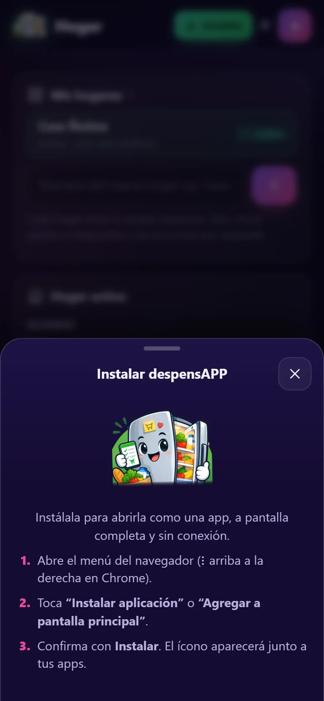
Botón “Instalar”
- Abre despensapp.web.app en el teléfono.
- Toca el botón verde Instalar de la barra superior (o la tarjeta “Instala despensAPP” en Inicio).
- Android / Chrome: aparece el aviso del sistema; confirma con Instalar.
- iPhone / Safari: toca Compartir → Agregar a pantalla de inicio → Agregar.
¿Usabas la dirección anterior (despensapp-eb4a7.web.app)? Ábrela una vez y toca “Ir a despensapp.web.app con mis datos”; luego instala la app desde la nueva dirección.
Cuando la app ya está instalada, el botón desaparece. También encuentras “Instalar app” en la pestaña Hogar.
2Primeros pasos e Inicio
La primera vez se configura el hogar: nombre, quién eres, quién más vive contigo y el presupuesto mensual.
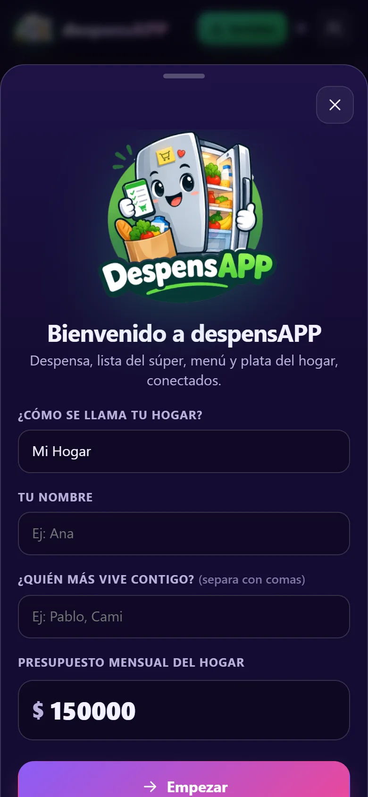
Bienvenida
- Escribe el nombre del hogar, tu nombre y el resto de los integrantes separados por comas.
- Define el presupuesto mensual (puedes cambiarlo después).
- Toca Empezar. Si quieres ver la app con datos, usa Probar con datos de ejemplo.
- ¿Te invitaron? Escribe el código del hogar y toca Unirme.
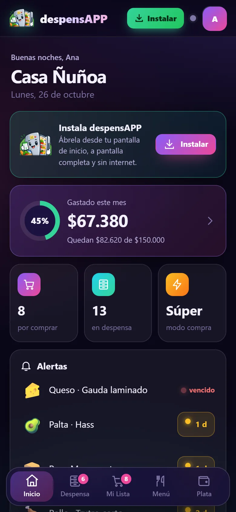
Pantalla de Inicio
- Anillo de presupuesto: cuánto se ha gastado en el período y cuánto queda.
- Accesos rápidos: productos por comprar, productos en despensa y el Modo Súper.
- Alertas: productos vencidos o por vencer (🟢 bien, 🟡 vence en menos de 5 días, 🔴 vencido) y productos bajo el mínimo.
- Próximas comidas y la bitácora con lo último que hizo cada integrante.
Si tienes más de un hogar, toca el nombre del hogar para cambiar de uno a otro.
3Despensa
Lo que hay en casa, con cantidades en varias unidades, fecha de vencimiento y stock mínimo.
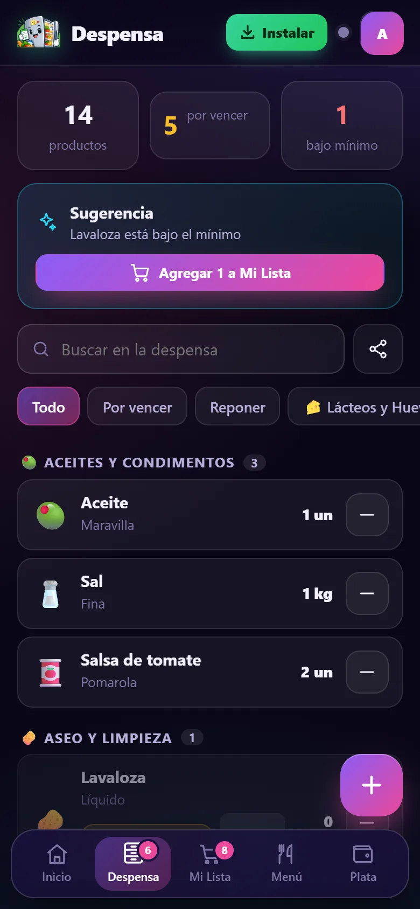
Ver y filtrar
- Arriba: total de productos, cuántos están por vencer y cuántos bajo el mínimo.
- La tarjeta Sugerencia agrega a la lista todo lo que bajó del mínimo con un toque.
- Busca por nombre o filtra por Por vencer, Reponer o categoría.
- El botón − de cada fila descuenta una porción rápida (con opción Deshacer).
- El ícono compartir genera el texto “Qué nos queda en casa”, “Por vencer” o “Faltantes” para WhatsApp, o como imagen.
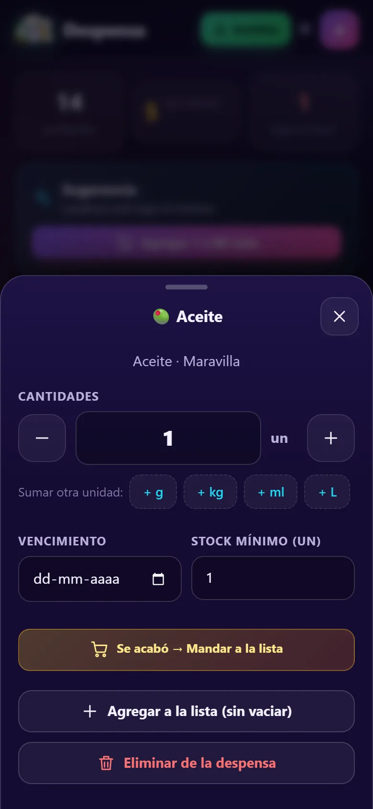
Editar un producto
- Ajusta la cantidad con − / + o escríbela. Puedes sumar otra unidad (ej: 1 L + 250 ml).
- Vencimiento activa el semáforo y las alertas.
- Stock mínimo: si baja de ese número, la app sugiere reponerlo.
- Se acabó → Mandar a la lista lo deja en cero y lo agrega a Mi Lista.
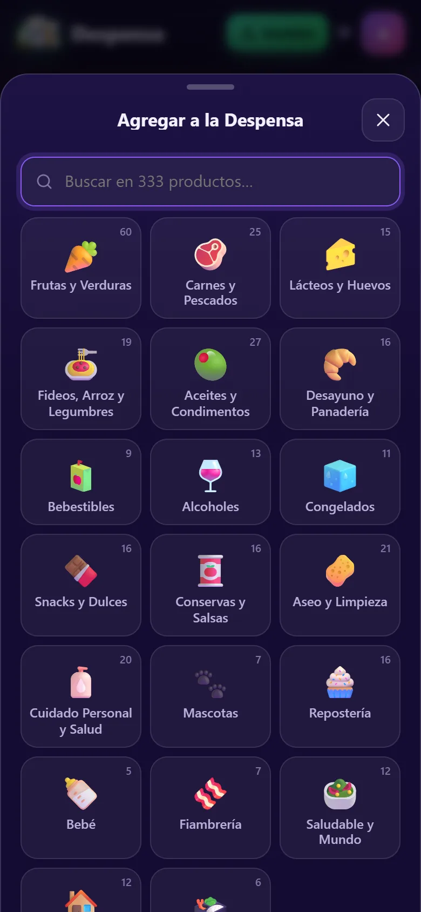
Agregar desde el catálogo
Toca el botón +. El catálogo tiene 20 categorías y más de 330 productos de supermercado chileno, cada uno con variantes (marca, formato, tipo).
- Busca por nombre o entra a una categoría.
- ¿No está? Usa Producto personalizado e indica si contiene gluten, lactosa, etc.
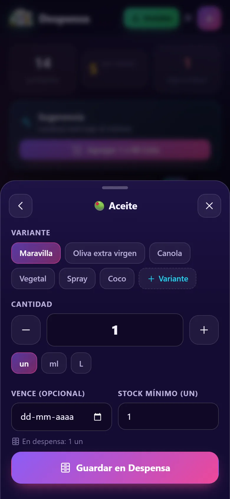
Variante, cantidad y unidad
- Elige la variante (o crea una con + Variante).
- Indica la cantidad y la unidad (un, g, kg, ml, L).
- Opcional: vencimiento y stock mínimo.
- Si el producto no es apto para alguien de la casa, aparece un aviso.
4Mi Lista y Modo En el Súper
Planifica la compra en casa y úsala como calculadora en el pasillo.
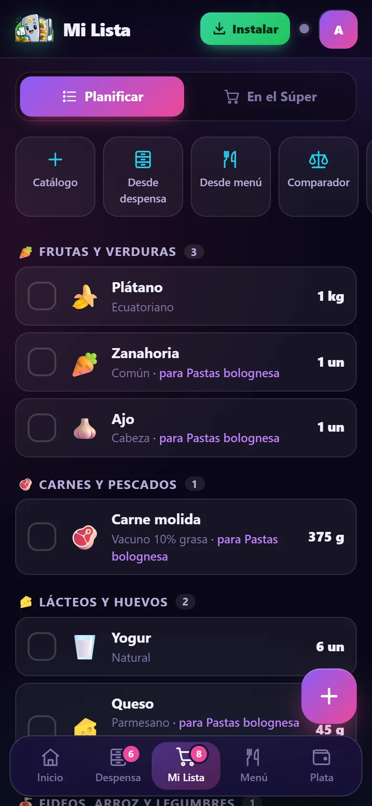
Planificar
- Agrega desde el Catálogo, Desde despensa (lo que se acabó primero) o Desde menú (solo lo que falta para las recetas agendadas).
- Cada producto muestra la cantidad exacta y su origen (ej: “para Pastas bolognesa”).
- Si ya hay algo en casa, lo indica en celeste. Los avisos de dieta y salud aparecen bajo el producto.
- Compartir envía la lista por WhatsApp.
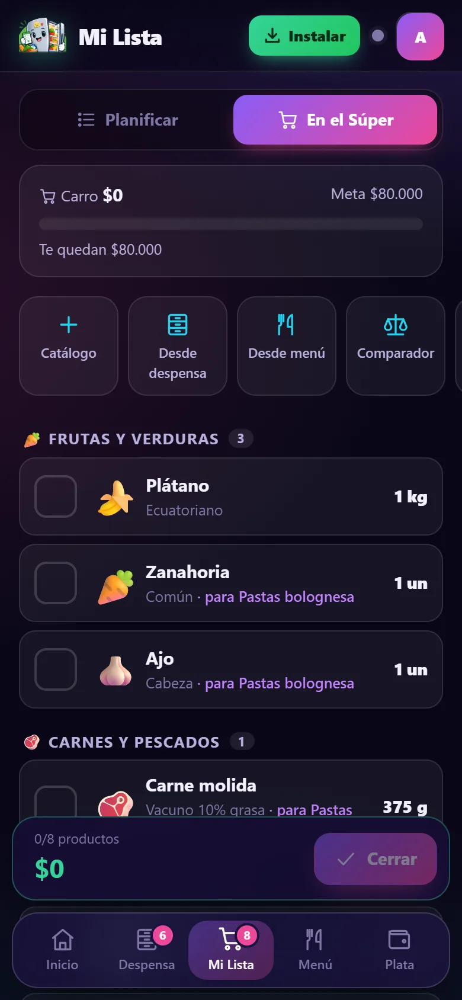
En el Súper
- El termómetro compara el carro con el presupuesto por compra: verde, amarillo (más del 80 %) y rojo cuando te pasas.
- La barra inferior suma el carro en tiempo real.
- Toca un producto para registrar el precio real.
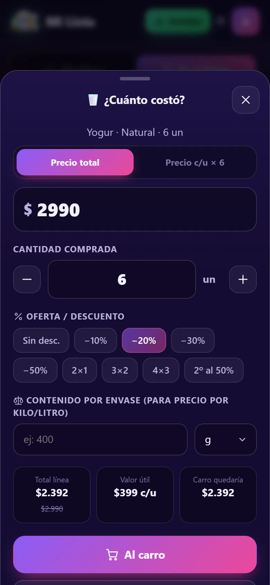
¿Cuánto costó?
- Ingresa el precio total o el precio por unidad.
- Aplica ofertas: −10 % a −50 %, 2×1, 3×2, 4×3 o 2º al 50 %.
- Con el contenido del envase calcula el valor útil ($/kg o $/L).
- “Carro quedaría” muestra cómo queda el total antes de confirmar.
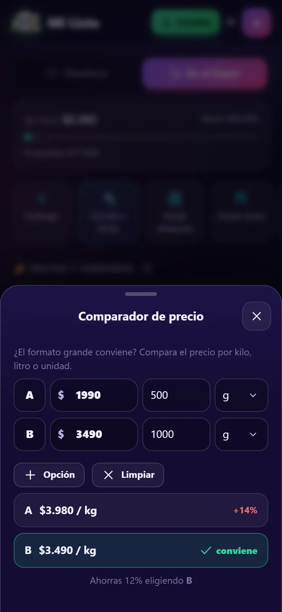
Comparador de formatos
¿Conviene el formato grande? Ingresa precio y contenido de dos o más opciones y la app marca la más barata por kilo, litro o unidad, con el porcentaje de ahorro.
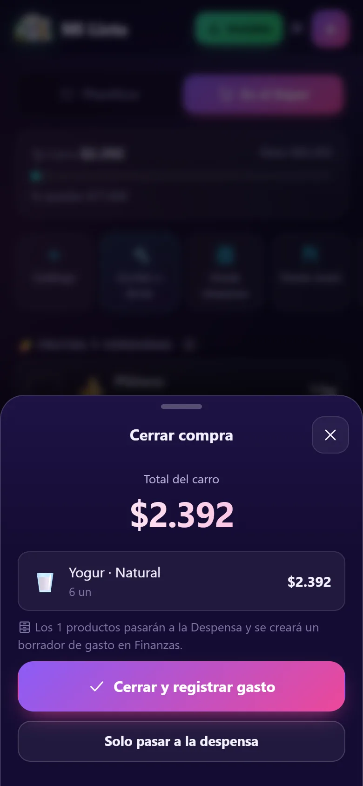
Cerrar la compra
- Toca Cerrar cuando termines.
- Los productos comprados pasan automáticamente a la Despensa.
- Con Cerrar y registrar gasto se crea un borrador de gasto con el total y el detalle, listo para adjuntar la boleta.
6Dietas, alergias y salud
Cada integrante puede tener dietas, alergias, condiciones de salud y alimentos que no puede comer. La app los usa en la lista, el catálogo y las recetas.
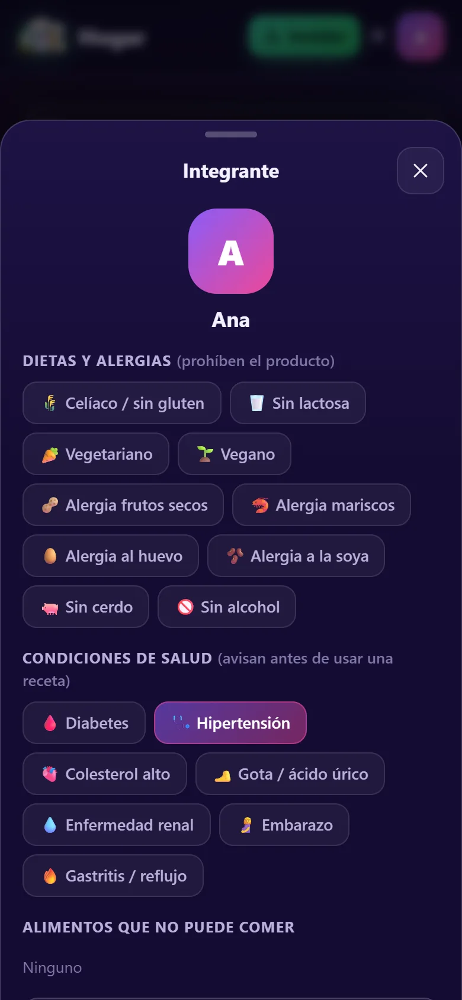
Configurar a un integrante
En Hogar → Integrantes, toca a la persona:
- Dietas y alergias (prohíben el producto): celíaco, sin lactosa, vegetariano, vegano, frutos secos, mariscos, huevo, soya, sin cerdo, sin alcohol.
- Condiciones de salud (avisan antes de usar una receta): diabetes, hipertensión, colesterol alto, gota, enfermedad renal, embarazo, gastritis.
- Alimentos que no puede comer: busca y agrega productos puntuales (ej: palta, cilantro).
| Condición | Avisa por |
|---|---|
| Hipertensión / renal | Productos altos en sodio (sal, caldos, embutidos, salsa de soya, snacks, conservas) |
| Colesterol / gastritis | Grasas saturadas (mantequilla, crema, embutidos, frituras) |
| Gota | Mariscos, vísceras, sardinas y alcohol |
| Diabetes | Azúcar (prohíbe) y miel (precaución) |
| Embarazo | Alcohol (prohíbe) y crudos o curados (sushi, ahumados, salame) |
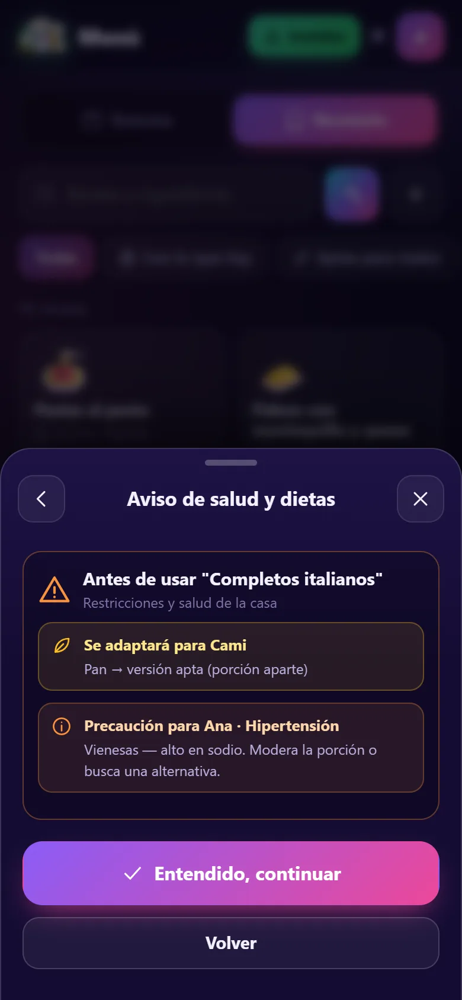
Aviso antes de usar una receta
Al agendar, mandar faltantes o cocinar una receta con algún problema, aparece este aviso:
- Rojo: alguien no puede comerla y no hay alternativa (o elegiste “Sin adaptar”).
- Amarillo: se adaptará con una versión apta (ej: pan sin gluten para Cami).
- Naranja: precaución por una condición de salud (ej: vienesas altas en sodio para Ana).
Toca Entendido, continuar para seguir o Volver para elegir otra receta.
Los avisos son una ayuda para organizarse y no reemplazan la indicación de un médico o nutricionista.
7Plata: presupuesto, gastos y cuentas claras
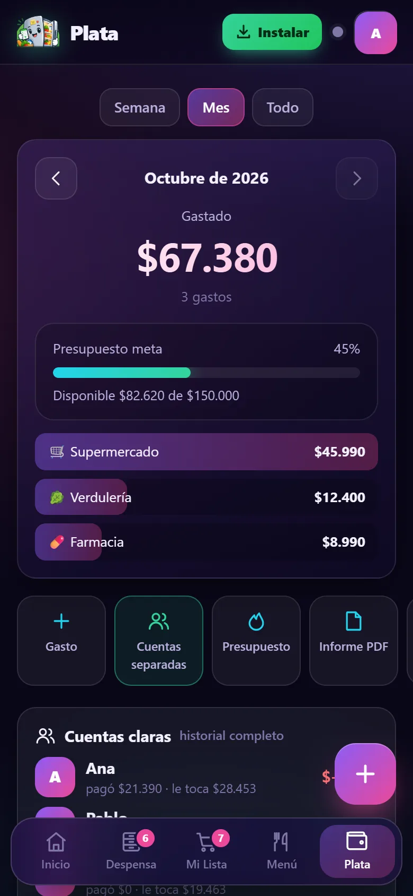
Resumen
- Elige Semana, Mes o Todo y navega entre períodos.
- El termómetro compara lo gastado con el presupuesto meta; debajo, el gasto por categoría.
- Cuentas claras: cuánto pagó cada uno, cuánto le corresponde y quién le debe a quién. Saldar registra la transferencia.
- Exporta el Informe PDF (con resumen, detalle, firmas y fotos de boletas), un CSV para Excel o una imagen.
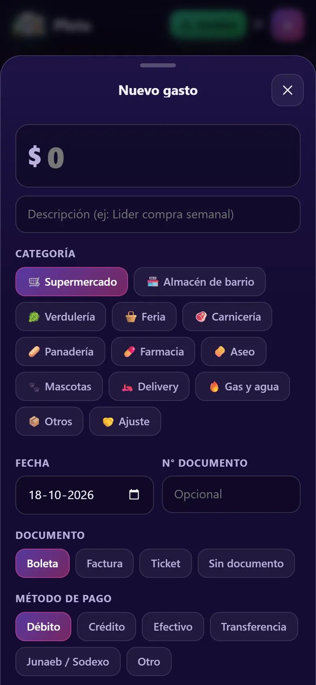
Registrar un gasto
- Monto, descripción y categoría (supermercado, feria, farmacia, etc.).
- Fecha, tipo y número de documento, y método de pago.
- ¿Quién pagó? y Repartir entre (todos o solo algunos).
- Adjunta la foto de la boleta con la cámara o la galería. Con internet, Leer total desde la boleta intenta detectar el monto.
8Hogares, sincronización y bitácora
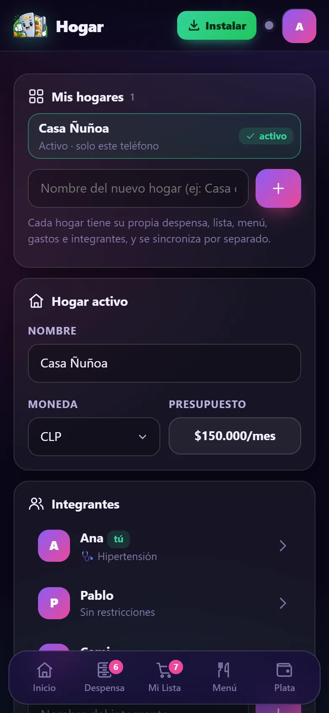
Varios hogares
Puedes tener más de un hogar (por ejemplo, tu casa y la casa de la playa, o la casa de tus padres). Cada uno tiene su propia despensa, lista, menú, gastos, integrantes y código de sincronización.
- Crear: escribe el nombre en “Mis hogares” y toca +.
- Cambiar: toca el hogar en la lista, o su nombre en Inicio.
- Eliminar: ícono de basurero (dos toques). Solo se borra de este teléfono.
Hogar compartido
- En el hogar activo toca Crear hogar compartido: aparece un código de 6 letras y un QR.
- Los demás integrantes tocan Unirme con el código o Escanear QR.
- Desde ese momento todos ven la despensa, la lista y los gastos en tiempo real, con avisos cuando alguien hace un cambio.
Si te unes a un hogar mientras el actual ya tiene datos, la app crea un hogar nuevo para no mezclar despensas.
Cualquiera que tenga el código puede ver y editar ese hogar: compártelo solo con quienes viven contigo.
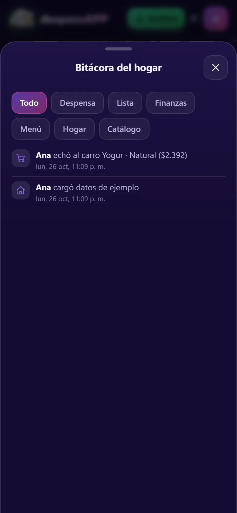
Bitácora
Registro automático de lo que hace cada integrante (“Ana echó al carro Yogur”, “Pablo registró una boleta de $34.500”), filtrable por Despensa, Lista, Finanzas, Menú, Hogar y Catálogo.
Respaldo
En Hogar puedes exportar todos los datos a un archivo JSON e importarlo en otro teléfono (se combina con lo que ya hay).
?Preguntas frecuentes
¿Funciona sin internet?
Sí. Todo se guarda en el teléfono. Si el hogar es compartido, los cambios se sincronizan al recuperar la conexión. Solo la lectura automática de boletas necesita internet.
¿Dónde quedan las fotos de las boletas?
En el teléfono, comprimidas. En un hogar compartido también se suben para que los demás las vean.
Cambié algo y otro integrante también, ¿se pierde algo?
No. La app combina los cambios producto por producto y gasto por gasto; si dos personas editan el mismo producto, queda el último cambio.
No encuentro un producto en el catálogo
Búscalo y toca “Crear producto…”, o agrega una variante nueva a un producto existente. Quedan disponibles para todo el hogar.
¿Cómo veo la versión nueva cuando hay una actualización?
La app avisa con “Nueva versión disponible”; toca Actualizar. Si no aparece, cierra y vuelve a abrir la app.
★Novedades
Versión 1.1.1 — 18 de octubre de 2026
- Nueva dirección: despensapp.web.app. La dirección anterior muestra un aviso con el botón “Ir a despensapp.web.app con mis datos”, que traslada todos tus hogares; los enlaces de invitación se redirigen solos.
Versión 1.1.0 — 18 de octubre de 2026
- Nuevo logo e íconos de la app.
- Botón Instalar en la barra superior, en Inicio y en Hogar (con instrucciones para iPhone).
- Catálogo ampliado con categorías de supermercados chilenos: de 223 a 333 productos, nueva categoría Comidas preparadas.
- Condiciones de salud por integrante (hipertensión, diabetes, colesterol, gota, renal, embarazo, gastritis) y alimentos prohibidos puntuales.
- Aviso previo antes de agendar, comprar o cocinar una receta con restricciones.
- Varios hogares en el mismo teléfono, cada uno con su propia despensa y sincronización.
- Manual de uso con capturas.
- Corrección: el botón atrás ya no puede sacarte de la app al cerrar y abrir hojas seguidas; variantes de agua “1.6 L” se mostraban partidas.
Versión 1.0.1 — 16 de octubre de 2026
- Lanzamiento: despensa, lista con Modo Súper, menú con 95 recetas, finanzas con boletas y PDF, hogar compartido en tiempo real.